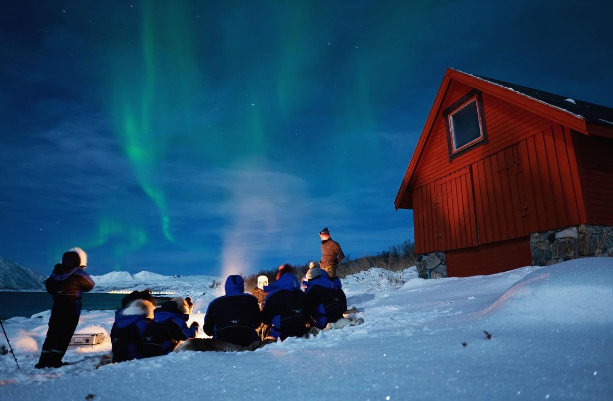

I’m passionate about web development, UX/UI design, traveling, and photography. My goal is to learn coding and eventually build my own professional CV website. In the meantime, I want to explore the world and capture meaningful moments through my photography.🌎
Discover National GeographicI am passionate about UX/UI Design. It allows me to combine creativity with functionality. My goal is to design my professional website one day. I find web development fascinating—it’s like learning a new language, but instead of communicating with people, you’re speaking to computers.
I am passionate about Traveling because it connects me with people from all corners of the world. The beauty of cross-cultural communication fascinates me, and I love gaining new perspectives through these experiences. I have a deep love for languages, too—so far, I speak English, Chinese, Japanese, and B1-level French, and I dream of learning even more as I continue my journey around the globe.
I am passionate about Photography. I believe it captures moments that can never be relived. Through photography, I can tell stories that words often can’t fully express.
